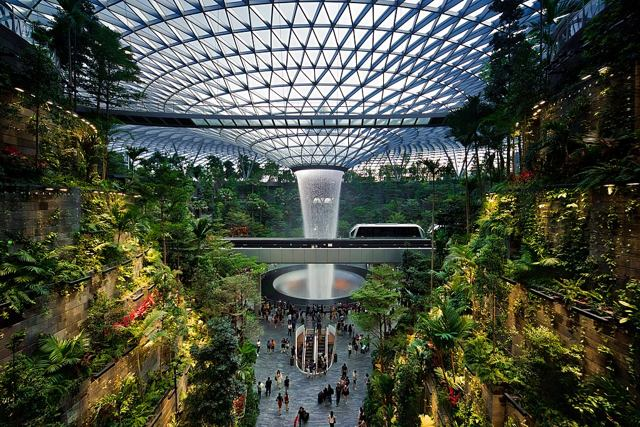
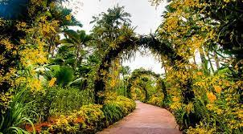

Grădina BotanicăGrădina Botanică din Singapore este o grădină tropicală veche de 160 de ani, situată la marginea cartierului comercial Orchard Road din Singapore. Este una dintre cele trei grădini și singura grădină tropicală inclusă în lista patrimoniului mondial UNESCO. Începând cu 2013, grădina botanică este considerată una dintre atracțiile de top din Asia. A fost prima grădină declarată Grădina Anului la International Garden Tourism Awards în 2012 și a primit calificativul de trei stele Michelin în 2008. Cea mai lungă distanță este cea dintre capetele de nord și de sud este de 2,5 kilometri. Grădinile Botanice sunt vizitate de aproximativ 4,5 milioane de persoane anual. Grădina Botanică a fost fondată în locul său actual în 1859 de o societate de agro-horticulturală. Aceasta a jucat un rol esențial în expansiunea comerțului cu cauciuc din regiune la începutul secolului al XX-lea, când primul său director științific, Henry Nicholas Ridley, a condus cercetările în cultivarea plantei. Prin perfecționarea tehnicii de extracție a cauciucului, folosită încă în prezent, și promovarea valorii sale economice pentru plantatorii din regiune, producția de cauciuc s-a extins rapid. În anii 1920, peninsula malaeziană producea jumătate din latexul comercializat la nivel global. La începutul independenței națiunii, expertiza Grădinilor Botanice din Singapore a ajutat la transformarea insulei într-un oraș de grădină tropical, o imagine și un simbol pentru care națiunea este cunoscută pe scară largă. În 1981, orhideea hibridă agățătoare Vanda Miss Joaquim a fost aleasă drept floarea națională a țării. Grădina Națională de Orhidee, din cadrul grădinilor principale, se numără printre cele mai apreciate centre de studiu al orhideelor și este pionier în cultivarea diferiților hibrizi, complementând statutul națiunii de exportator major de orhidee tăiate. Ajutată de climatul ecuatorial, grădina găzduiește cea mai mare colecție de orhidee, cuprinzând 1.200 de specii și 2.000 de hibrizi. Este principalul punct de atracție din cadrul Grădinilor Botanice. Situat în situl deluros de trei hectare, are o colecție de peste 1.000 de specii și 2.000 de hibrizi de orhidee. Grădina VIP Orchid conține hibrizi ai celor mai populare orhidee VIP. Câțiva hibrizi notabili sunt Dendrobium Memoria Prințesa Diana, Dendrobium Margaret Thatcher, Renantanda Akihito, Dendrobium Masako Kotaishi Hidenka, Dendrobium Elizabeth și Vanda Gloria Macapagal-Arroyo. Peste 100 de celebrități, demnitari și șefi de state au fost onorați prin programul diplomației de orhidee din Singapore. Orhidariul cuprinde specii naturale de orhidee într-un mediu tropical natural. Pădurea tropicală are aproximativ șase hectare, care este mai veche decât grădina în sine. Pădurea tropicală de aici și cea de la rezervația naturală Bukit Timah sunt situate în interiorul orașului Singapore. Astfel, Singapore este unul dintre cele două orașe majore cu o pădure tropicală în limitele sale, celălalt fiind Rio de Janeiro cu pădurea Tijuca. Grădina de ghimbir , situată lângă Grădina Națională de Orhidee, această grădină de un hectar reunește membri din familia Zingiberaceae. Există, de asemenea, și o cascadă. Grădina de ghimbir a fost deschisă oficial în anul 2003 și a preluat locul lăsat liber de precedenta seră de orhidee. Centrul de Botanică și Poarta Tanglin. Pavilionul Verde este primul „acoperiș verde” din Singapore. Acoperișul este acoperit în întregime de diverse buruieni și plante ierboase. Grădina pentru copii Jacob Ballas a fost numită după principalul donator, Jacob Ballas, un filantrop evreu-singaporez care a decedat în 2004. În Grădina pentru copii se află o sculptură, comandată de către muzeul Yad Vashem în 2010. De la distanță, sculptura pare a fi un copac, dar de aproape pot fi observate 500 de figuri umane. |